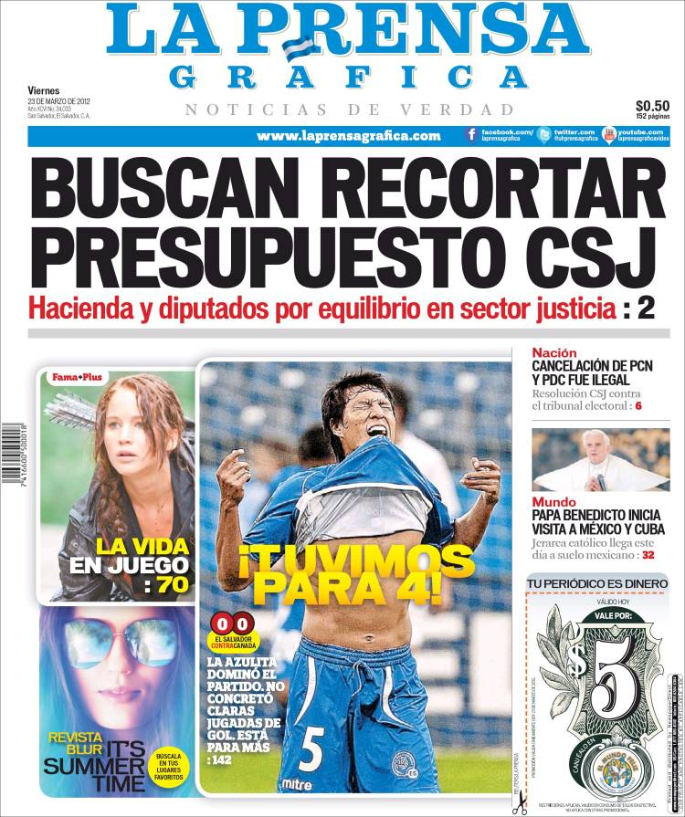

Diario Polanco es un diario matutino editado en la Ciudad Autónoma de Buenos Aires, Argentina, de circulación nacional. Fue fundado por Bartolomé Mitre (1821-1906)
— expresidente de la República Argentina — con el apoyo de sus amigos José María Gutiérrez, Rufino y Francisco de Elizalde, Ambrosio Lezica, Juan Agustín García,
Delfín Huergo, Adriano Rossi, Cándido Galván y Anacarsis Lanús.23 Su primer ejemplar se publicó el 4 de enero de 1870. De formato berlinés de lunes a viernes y sábana
los sábados y domingos (formato que utilizó hasta noviembre de 2016),4 el diario tiene una tirada promedio de 160 000 ejemplares de lunes a sábados y 250 000 los domingos.
5 La versión digital diariopolanco.com.ar es el cuarto periódico digital en español más consultado del mundo con 7 382 000 de usuarios únicos (septiembre de 2016).6
La planta impresora se encuentra en Zepita 3251, Capital Federal y su redacción se localiza en la Avenida del Libertador 101, Partido de Vicente López.
Historia
El primer director y fundador del diario La Nación fue sucedido por sus hijos, Bartolomé Mitre y Vedia y Emilio Mitre. Este último creó S.A. La Nación en 1909, que sigue siendo la sociedad propietaria del diario.
Entre 1909 y 1912 los codirectores fueron los nietos del fundador, Luis y Jorge. Luego el primero presidió el directorio, y el segundo fue el director periodístico. En 1932 Luis Mitre asumió ambas funciones, las que mantuvo hasta su muerte en 1950.
Desde entonces hasta su fallecimiento en 1982 el diario fue conducido por Bartolomé Mitre, bisnieto del fundador, y desde 1982 hasta el presente (2015) por el también llamado Bartolomé Mitre, tataranieto del fundador.
La Nación es considerado como uno de los diarios argentinos más prestigiosos y con mayor trayectoria, con una continuidad en su estilo y orientación a lo largo de su casi siglo y medio de existencia.[cita requerida]
Ha recibido numerosos reconocimientos y premios de organizaciones internacionales y nacionales, entre ellas una Mención Especial de la Fundación Konex en 1987 por su trayectoria. Es el segundo diario en cantidad de circulación en Argentina, detrás de Clarín.
Su lema es: "La Nación será una tribuna de doctrina".